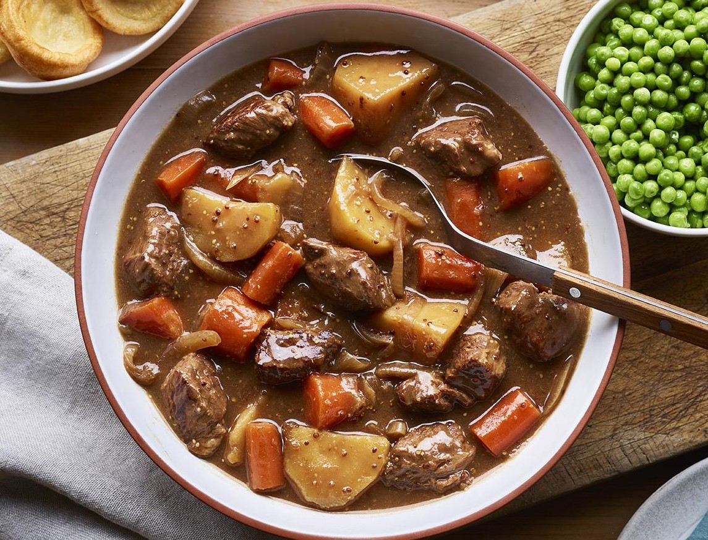

Slow Cooker Beef Stew

Description
This simple stew has a gravy-like sauce that benefits from browning the beef first, but you can also just throw everything in the slow cooker pot and it will still taste great.
Ingredients
- 2 tsp vegetable, sunflower or rapeseed oil
- 400–500g/14oz–1lb 2oz beef skirt, braising steaks or diced beef, chopped into 4–5cm/1½ –2in chunks
- 1 onion, sliced
- 4 tbsp gravy granules
- 2 tbsp wholegrain mustard
- 1 beef stock cube, crumbled
- 350g/12oz carrots, peeled and cut into 2–3cm/¾–1¼in batons
- 600g/1lb 5oz potatoes, peeled and cut into 4–5cm/1½ –2in chunks
- 400g/14oz frozen peas
- salt and freshly ground black pepper
Cooking Instructions
- Heat 1 teaspoon oil in a heavy-based frying pan. Divide the beef into two batches and add the first batch to the pan. Turn the beef to sear and colour on all sides to a rich, dark brown. Transfer the browned chunks straight to the slow cooker pot. Repeat with the remaining oil and beef.
- Add the onion, gravy granules, mustard and stock cube to the pot and pour in 550ml/1 pint water. Give everything a quick stir, then add the carrots and potatoes. Cover with the lid and cook for 7 hours on low. Stir once during cooking, if you are at home, to rotate the meaty chunks sitting on the top.
- Meanwhile, Steam, microwave or boil the peas for 3–4 minutes until cooked.
- Season the stew with salt and pepper. Ladle portions of the stew onto plates. Serve the green peas alongside.